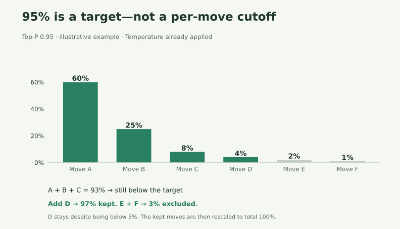
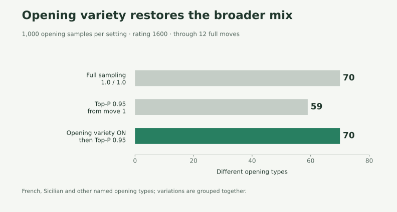
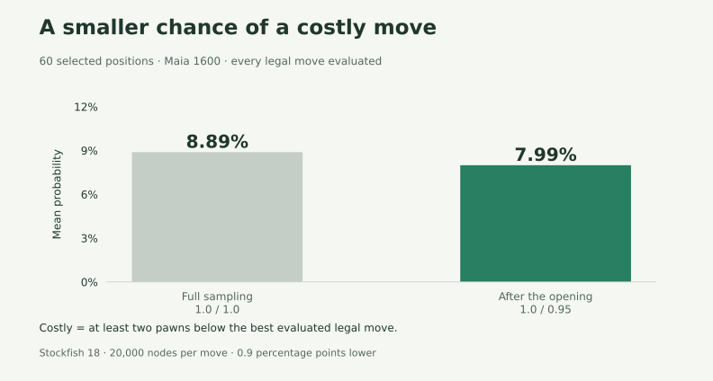
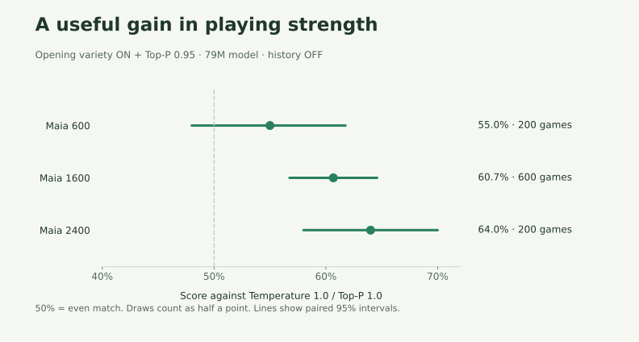

We want Maia to offer a wide choice of openings while reducing the unlikely mistakes that can make its play feel odd. Our proposed balance is Temperature 1.0, Top-P 0.95, with Max variety in opening on.

The in-app setting "Max variety in opening" gives Maia 1.0 / 1.0 for the first five moves by each side, then applies user settings from move 6. In this study, those settings were Temperature 1.0 / Top-P 0.95.
Keep the probabilities, trim the tail
Temperature 1.0 keeps Maia's original balance between more and less likely moves. Top-P 0.95 removes the least likely tail of choices, then redistributes their share among the remaining moves.


The cutoff applies to the combined probability, not each individual move. Here, the first three moves total 93%, so the 4% move stays too. Together they reach 97%; the remaining 3% is removed.
The idea is to keep most of Maia's choices while reducing its chance of selecting an unlikely, costly mistake. The opening override delays that filtering so less common openings still get their turn.
What we tested
Using the Maia-3 79M model, we compared:
| Setting | First five moves | From move 6 |
|---|---|---|
| Full sampling | 1.0 / 1.0 | 1.0 / 1.0 |
| Top-P 0.95 throughout | 1.0 / 0.95 | 1.0 / 0.95 |
| Opening variety + Top-P 0.95 | 1.0 / 1.0 | 1.0 / 0.95 |
Each pair of settings played 600 games at 1600, our main comparison and the benchmark used in the earlier settings tests. We added 200 games per pair at 600 and 2400 to check lower and higher ratings. This put more computing time into the main comparison while checking whether its result carried across ratings. The game counts were fixed before the tests began.
Altogether: 3,000 full games, 5,400 opening samples and 180 move-quality positions, with move-history input off.
The opening mix returns


Applying Top-P 0.95 from move one reduced the sample from 70 opening families to 59. Keeping full sampling for the first five moves restored 70.
Opening families are types such as the French or Sicilian. If a game starts in the French and later leaves the known line, we keep counting it as French. So 70 means 70 opening types appeared; it does not tell us whether particular variations appear equally often.
How we compared the opening sequences
We reused the same sequence of random numbers for each setting. Full sampling and the combined setting therefore made identical choices for the first five moves, when their rules were the same. From move six, the combined setting removed some candidates, so those same random numbers could select different moves. Only 71 of the 1,000 pairs still had identical move sequences through move 12 or an earlier shared ending. They could begin with the same opening and continue differently.
A smaller chance of a costly move


In 60 selected positions at 1600, the average probability of choosing a move at least two pawns worse than the best evaluated legal move fell from 8.89% to 7.99%. Every legal move was evaluated with the same Stockfish 18 search budget.
That supports the reason for trimming: some of the unlikely tail consists of costly mistakes. Top-P does not evaluate moves itself, and filtering can remove good moves too. Full move-quality results.
A useful gain in playing strength


At 1600, the combined setting won 345, drew 38 and lost 217 of 600 games against full sampling. That is 60.7% of the available points, with draws worth half a point. Its 95% interval is 56.8–64.6%.1
The measured opening mix was retained, costly choices became less likely in the evaluated positions, and the main match showed a useful strength gain. That is the case for opening variety on, Temperature 1.0, Top-P 0.95 as a balanced setting for Mobile Maia.
Data and full details
- Full study: results and methods
- Recorded games, data and reproduction instructions
- Figure values · Figure generator · Plotting dependencies
Maia is developed by the University of Toronto CSS Lab and collaborators. The opening-variety idea was inspired by maia3-tauri.
Text and figures are published from the same pinned research snapshot. Methods, data and source ↗